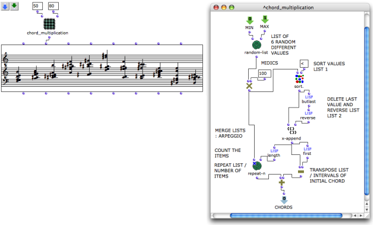

OpenMusic DocumentationHiérarchie de section : OM 6.6 User Manual > Visual Programming II > Abstraction
OpenMusic DocumentationHiérarchie de section : OM 6.6 User Manual > Visual Programming II > Abstraction
Navigation : page précédente | page suivante
Attention, votre navigateur ne supporte pas le javascript ou celui-ci à été désactivé. Certaines fonctionnalités de ce guide sont restreintes.
Abstraction
Abstraction
A program or patch can be more or less complex, and comprise one or several components "layers", like a tree structure. Such structures consist of patches embedded into other patches. Processes embedded in higher-level programs are called abstractions.
Abstraction aims at using a program as a function within another program.
- From a formal view, an abstraction results from the conversion of one or several elements of a program into variables .
- Consequently, in practical terms, an abstraction must have at least one outlet to communicate with the external environment .
Purposes
Abstractions allow to :
define and visualize the structure of a complex program,
bring modularity in a program,
control the development of a compositional architecture and processes, or considering it from another prospect,
gain space in a patch editor...
Example : Abstraction of a Process
Abstraction is a very convenient procedure – an abstracted program can be complex and "bulky". Its representation as an object also shows what an abstraction actually is : a coherent and delineated function inside another program. This is the crucial, essential property of functional abstraction.

A chord multiplication patch has been embedded as an abstraction inside a patch. The resulting chord sequence is visualised and integrated in a "higherlevel" processZoom
{kind=link}
Références :
Plan :
Navigation : page précédente | page suivante
A propos...(c) Ircam - Centre Pompidou